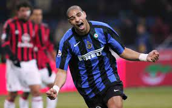

QUEM FOI: ADRIANO IMPERADOR

Adriano Imperador é o apelido de Adriano Leite Ribeiro, um famoso ex-jogador de futebol brasileiro. Ele nasceu em 17 de fevereiro de 1982 no Rio de Janeiro, Brasil. Adriano é conhecido por sua carreira no futebol, que inclui passagens por clubes como Flamengo, Internazionale de Milão, Parma e Roma, entre outros. Adriano ganhou destaque como um dos melhores atacantes do mundo durante sua carreira. Ele teve sucesso tanto no cenário nacional quanto internacional. Pelo Flamengo, foi fundamental na conquista do Campeonato Brasileiro de 2009 e da Copa Libertadores de 2009. Além disso, teve uma passagem bem-sucedida pela Internazionale, onde ganhou vários títulos da Serie A italiana.No entanto, a carreira de Adriano também foi marcada por desafios pessoais e problemas fora de campo, incluindo questões de saúde e problemas pessoais. Ele teve períodos de inatividade devido a lesões e problemas pessoais, o que afetou seu desempenho e sua carreira no geral.Apesar desses altos e baixos, Adriano ainda é lembrado como um dos talentos mais brilhantes do futebol brasileiro e internacional, e seu apelido "Imperador" reflete seu status como um dos ícones do futebol brasileiro.

COMO ESTA ADRIANO HOJE?
Desde 2017 Didico vive uma vida intensa nas redes sociais, mas reclusa com a mídia. O jogador quase não fala com a imprensa, que costuma noticiar o que ele se permite abrir ou que se torna de conhecimento público por meio de pessoas próximas como relacionamentos amorosos e até algumas tretas.
Do mais, Didico vive uma vida perto dos seus, de pessoas que o tratam como o menino da Vila Cruzeiro, local onde vira e mexe ele aparece para curtir um churrasco na laje, apesar de ter casas fora da comunidade, na Região dos Lagos e até ter morado recentemente em um hotel de luxo por um período. Influenciador digital, Didico conta com 7,7 milhões e brinca com causos do dia a dia, inclusive lançando memes e frases de efeito, mesmo sem querer, como 'És...' e 'Nem cavalo aguenta'. Seus seguidores o amam e o defendem de tudo, sempre com tom de brincadeiras.
"Olha aqui o tal de Bruna, nem te conheço minha amigo. Tu quer ganhar mídia? Quer ficar forte na mídia? Não usa o nome de ninguém não, fica forte por você não. Mas não fica usando o nome de ninguém não que isso é feio. Um beijo do gordo", disse Didico em um dos seus vídeos mais famosos.
E é isso que Didico parece tentar evitar: mostrar a vida além do necessário, evitar quem quer 'ficar forte na mídia' à sua custa e ser feliz podendo fazer o que 'lhe der na telha'. Seja feliz, Didico!